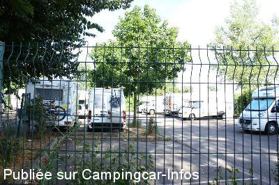
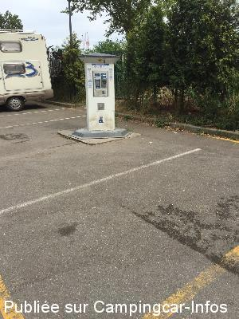
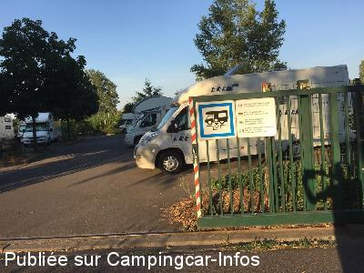
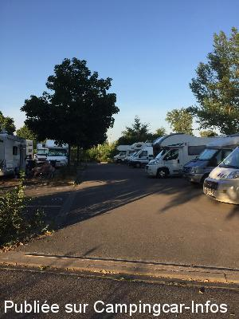
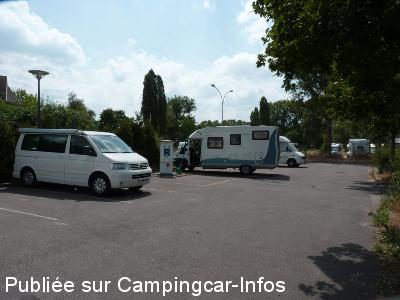
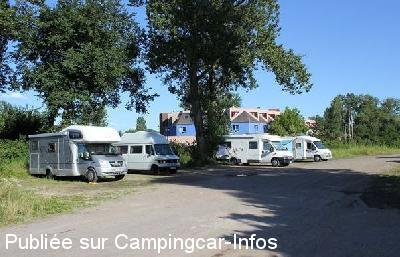

APCC = parkings réservés camping-cars sans services de :
STRASBOURG
(N° 372)
Accès/adresse :
Rue des Cavaliers
67000 STRASBOURG
67000 STRASBOURG
Latitude : (Nord) 48.56663° Décimaux ou 48° 33′ 59′′
Longitude : (Est) 7.79971° Décimaux ou 7° 47′ 58′′
Tarif : 2015
Stationnement gratuit
Eau ou 1 H d'électricité : 2,50 €
Paiement par carte bancaire ou jetons à retirer à l'Auberge de Jeunesse
Services :


Boulanger le matin
Aire de pique-nique
Commerces à proximité
Autres informations :
Ouvert toute l'année
Les services risquent d'être fermés en période hivernale.
30 emplacements matérialisés, goudronnés, éclairés, clôturés,
un peu en pente et en partie ombragés.
2 prises électriques sur la borne

Le 08/08/2015 par Benwa

Le 12/07/2015 par Snoopy

Le 11/07/2015 par Snoopy

Le 11/07/2015 par Snoopy

Le 01/12/2014 par Nicole et Guy

Le 21/07/2012 par iron
de
leolulu05
le 10/10/2015 :
Passage le 23/09/2015
Bien situé pour la visite de la ville.
Bus à 10/15mn de marche,puis tram pour le centre ville
2 stationnements possibles,l'un sur surface goudronnée
mais très occupé l'autre en face sur un terrain assez
inégal ,simplement gravillonné ,avec des flaques d'eau
par temps de pluie ou stationnent quelques CC " à l'année " dont un avec groupe électrogène bruyant.
Tout proche le "Parc des 2 rives" et la passerelle sur le Rhin pour une très belle promenade.
Passage le 23/09/2015
Bien situé pour la visite de la ville.
Bus à 10/15mn de marche,puis tram pour le centre ville
2 stationnements possibles,l'un sur surface goudronnée
mais très occupé l'autre en face sur un terrain assez
inégal ,simplement gravillonné ,avec des flaques d'eau
par temps de pluie ou stationnent quelques CC " à l'année " dont un avec groupe électrogène bruyant.
Tout proche le "Parc des 2 rives" et la passerelle sur le Rhin pour une très belle promenade.
de
Benwa
le 08/08/2015 :
Aire plutôt calme, juste à côté d'un grand parc avec un pont sur le Rhin. Pratique pour visiter la ville avec le bus + tram à 10 min de marche. Par contre vidange des eaux usées dans la grille d'égout des eaux de pluies, ce qui est salle, et la partie parking goudronnée est tres petite (dur de se garer avec un grand CC, mais pas impossible avec qq man½uvres). Il y a une autre partie juste à côté qui est non goudronnée (graviers blancs) sur lequel il y a plus de place. Le paiement CB de la borne de service ne fonctionne pas, il faut aller chercher des jeton à l'auberge de jeunesse juste à côté.
Aire plutôt calme, juste à côté d'un grand parc avec un pont sur le Rhin. Pratique pour visiter la ville avec le bus + tram à 10 min de marche. Par contre vidange des eaux usées dans la grille d'égout des eaux de pluies, ce qui est salle, et la partie parking goudronnée est tres petite (dur de se garer avec un grand CC, mais pas impossible avec qq man½uvres). Il y a une autre partie juste à côté qui est non goudronnée (graviers blancs) sur lequel il y a plus de place. Le paiement CB de la borne de service ne fonctionne pas, il faut aller chercher des jeton à l'auberge de jeunesse juste à côté.
de
cifre
le 27/06/2015 :
michelle juin 2015 bon accueille mais emplacements petits sur terrain gouderonnés sur terrain vague mal entretenu piste cyclable aux pieds de l'aire.vidage d'eaux usées non conforme 5 kms du centre historique
michelle juin 2015 bon accueille mais emplacements petits sur terrain gouderonnés sur terrain vague mal entretenu piste cyclable aux pieds de l'aire.vidage d'eaux usées non conforme 5 kms du centre historique
de
michelene73
le 22/12/2014 :
Arrivés à 19h le 16/12/2014, parking plein; Le long de la rue de la cavalerie, de nombreux CC sont garés.
Il est dommage que le grand parking juste à coté, ait une barrière à 2m et soit vide !
L'aire est bien mais pas facile de se garer dés qu'il y a plusieurs CC (sauf pour des fourgons).
Arrivés à 19h le 16/12/2014, parking plein; Le long de la rue de la cavalerie, de nombreux CC sont garés.
Il est dommage que le grand parking juste à coté, ait une barrière à 2m et soit vide !
L'aire est bien mais pas facile de se garer dés qu'il y a plusieurs CC (sauf pour des fourgons).
de
EIBEL André & ANITA
le 14/12/2014 :
A côté de l'auberge de jeunesse du jardin des 2 rives, juste avant le passage du pont du Rhin direction à Kehl (Allemagne)- Proximité de Strasbourg, centre-ville à 5km, aire tranquille. demande ANITA portable : 0647344517 et merci
A côté de l'auberge de jeunesse du jardin des 2 rives, juste avant le passage du pont du Rhin direction à Kehl (Allemagne)- Proximité de Strasbourg, centre-ville à 5km, aire tranquille. demande ANITA portable : 0647344517 et merci
de
Jean-François
le 03/12/2014 :
Pour y avoir été plusieurs fois cet aire est vraiment très agréable et bien pratique pour visiter la ville (bus tramway). En plus cette fois-ci un couple surveille les camping car et offre des services.
Pour y avoir été plusieurs fois cet aire est vraiment très agréable et bien pratique pour visiter la ville (bus tramway). En plus cette fois-ci un couple surveille les camping car et offre des services.
de
Nicole et Guy
le 01/12/2014 :
En juin, avons trouvé cette aire très pratique pour visiter Strasbourg. En raison des travaux du tram l'entrée sur le rond-point était modifiée (plus de barrière)ce sera le terminus du tram : centre-ville direct !!
En juin, avons trouvé cette aire très pratique pour visiter Strasbourg. En raison des travaux du tram l'entrée sur le rond-point était modifiée (plus de barrière)ce sera le terminus du tram : centre-ville direct !!
de
brigitte et pascal de la somme
le 16/02/2014 :
De passage début février ,avons été surpris par le cadre alentours ,par temps de pluie ,c'est un grand champ de bataille avec beaucoup d 'orniéres .l'aire par elle même est correct mais trop petite pour les manoeuvres .
Qu'attendez vous la ville de strasbourg (avec vos moyens ) pour valoriser ce site ,et nous permettre de rester plus longtemps pour profiter de votre patrimoine et de la gastronome !!!
De passage début février ,avons été surpris par le cadre alentours ,par temps de pluie ,c'est un grand champ de bataille avec beaucoup d 'orniéres .l'aire par elle même est correct mais trop petite pour les manoeuvres .
Qu'attendez vous la ville de strasbourg (avec vos moyens ) pour valoriser ce site ,et nous permettre de rester plus longtemps pour profiter de votre patrimoine et de la gastronome !!!
de
yan 88
le 12/08/2013 :
de passage le week end du 10 aout le parking est vite saturé en face on peux se garer mais cela ressemble à une friche pourquoi la ville de strasbourg n a pas laissé l acces libre pres du boulodrome qui est stabilise une reponse serait la binvenue
de passage le week end du 10 aout le parking est vite saturé en face on peux se garer mais cela ressemble à une friche pourquoi la ville de strasbourg n a pas laissé l acces libre pres du boulodrome qui est stabilise une reponse serait la binvenue
de
Champagnat
le 21/01/2013 :
Sympas les Strasbourgeois eau et tout ce qu'il faut seul problm c'est pour entrer il ya un racleur de carter! surtout avec un Cpc surbaissé ;ma femme et le toutou de 5 kg sont descenduent à pattes; calme et reposant: le 15 decembre 2012 . Indulgeance cause traveaux;et ce n'est pas souvent en ce qui me concerne
Sympas les Strasbourgeois eau et tout ce qu'il faut seul problm c'est pour entrer il ya un racleur de carter! surtout avec un Cpc surbaissé ;ma femme et le toutou de 5 kg sont descenduent à pattes; calme et reposant: le 15 decembre 2012 . Indulgeance cause traveaux;et ce n'est pas souvent en ce qui me concerne
de
BIDET
le 03/01/2013 :
Passage le 25/12/2012 : impossible de rentrer, largeur trop étroite (2.20 m), la plupart des camping cars sont plus larges. Nous avons trouvé pas sympas du tout le fait de mettre un réhausseur en béton au passage plus large de façon à endommager le dessous du camping car si jamais on s'y aventure ! En nuit, seul le bruit nous a arrêté, heureusement sans dommages ! Aire à éviter dorénavant.
Passage le 25/12/2012 : impossible de rentrer, largeur trop étroite (2.20 m), la plupart des camping cars sont plus larges. Nous avons trouvé pas sympas du tout le fait de mettre un réhausseur en béton au passage plus large de façon à endommager le dessous du camping car si jamais on s'y aventure ! En nuit, seul le bruit nous a arrêté, heureusement sans dommages ! Aire à éviter dorénavant.